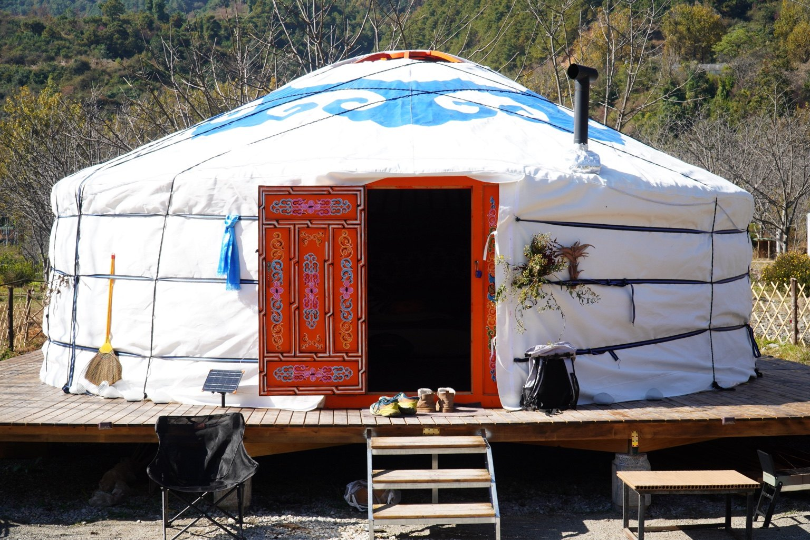
2 available · Accommodation
Four-wall Gers
A cosy traditional ger for slowing down and sleeping close to nature.
Peak ¥580 · Off-season ¥380 / night
A little piece of Mongolia in a living garden beneath the mountains.
Discover the gers ↓Three authentic Mongolian gers, a garden alive with animals and plants, and a small community of people who love Dali.
Gather around the fire, bake rose cakes from our own organic roses, help in the farm, watch a film under the stars, or take the path toward Cangshan. Come for a few nights or settle in for a little longer in the quieter season.
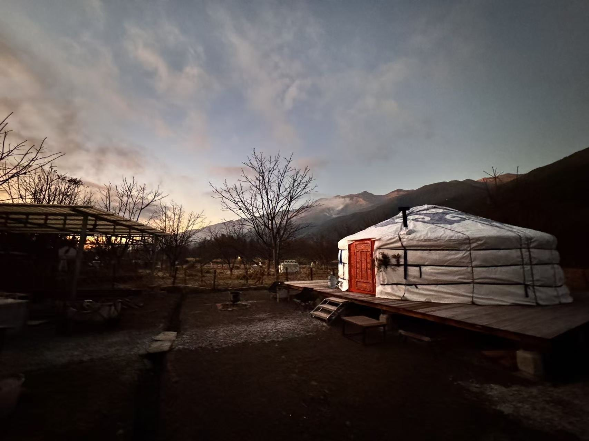
Short stays of 1–5 nights year-round; longer stays of 1–4 weeks in the off-season only. Prices shown in RMB and subject to date confirmation.

A cosy traditional ger for slowing down and sleeping close to nature.
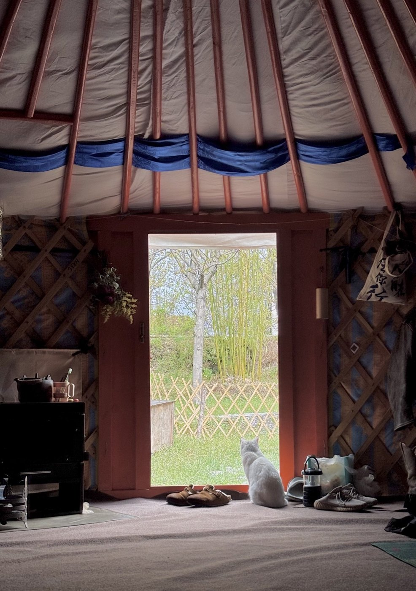
Our larger accommodation ger, with the warm textures of a traditional nomadic home.
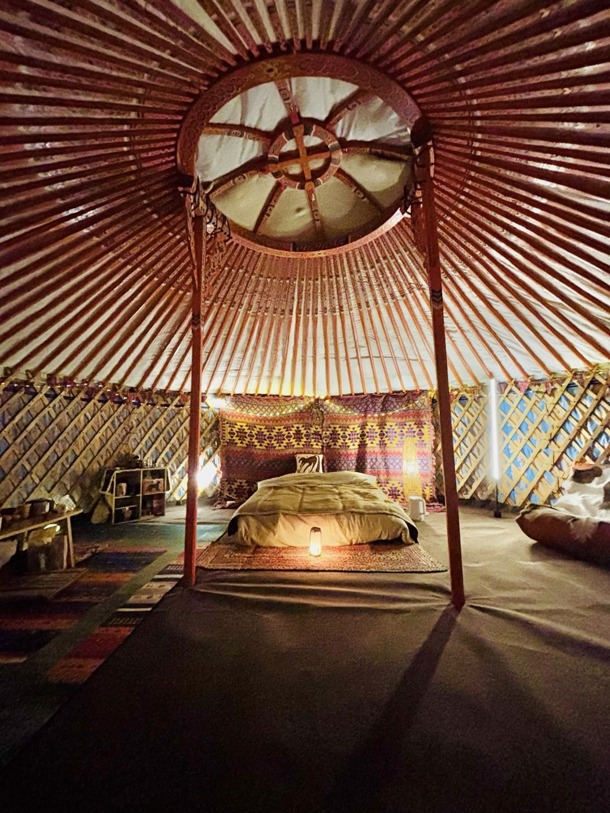
A special place for private gatherings, workshops, sound experiences and shared moments. Not available for overnight stays.
Peak/off-season dates and longer-stay rates will be confirmed with you before booking. No live availability is connected yet.
Our illustrated garden map shows the gers tucked among the trees, winding paths and growing spaces. Tap a marker to discover more.
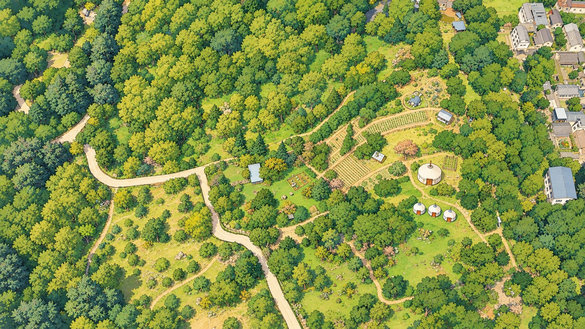
Explore places around ZHANSHE.
Illustration is an artistic garden overview, not a surveyed site plan.
A living garden for curious travellers, neighbours, makers and friends. Experiences depend on season and availability; some are arranged on request.
Taste Yunnan flavours and join traditional rose-cake workshops using roses from our own organic rose garden.
Volunteer on the organic farm, learn through working with the land and take part in seasonal walnut picking.
The garden is shared with our much-loved animals. Please treat them gently and give them space.
Join seasonal bonfire evenings, open-air films and relaxed bar nights. We can also help arrange transport to Dali Old Town.
Rent an electric scooter, ask us about hiking paths to Cangshan, waterfalls and temples, or discover village life nearby.
Our activity centre is available to rent for sound experiences, yoga, meditation and small group sessions.
Discover our Xiaochongshan guesthouse, a nearby vegan kombucha café, and an outdoor Tuina massage by arrangement.
A quiet new space for unwinding is being built. The spa is under construction and is not yet an available amenity.
For those who want time to read, create, volunteer or simply be, off-season stays are possible for one to four weeks.
Different paths, a shared love of nature, Mongolia and a life lived close to the earth.
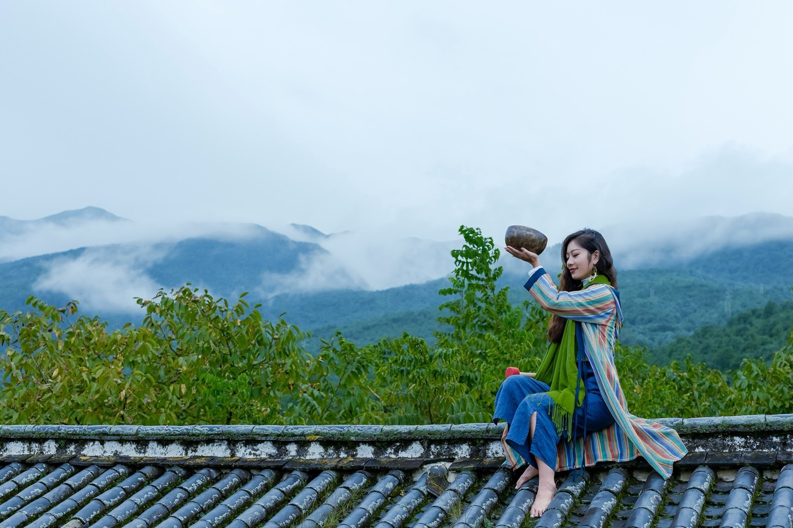
Mona has dedicated her life to living in harmony with nature and helping others find balance through sound. A passionate horse rider and sound therapist, she believes deeply in the connection between people, animals and the natural world. At ZHANSHE, she brings the spirit of a slower, more mindful way of life.
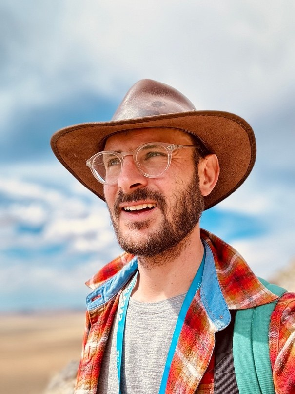
Simon is a German geologist who has lived and worked in China for twelve years, researching the evolution of early life on Earth. His work has taken him across remarkable landscapes and deep into the planet’s ancient past. He loves sharing that curiosity for nature, cultures and exploration with others.
Every photo here comes from ZHANSHE and the people behind it — no stock images.
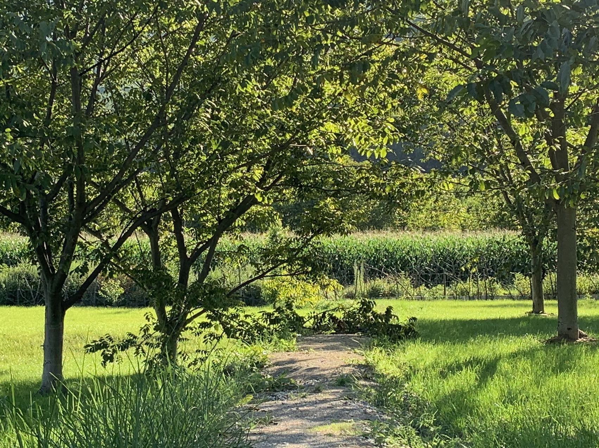
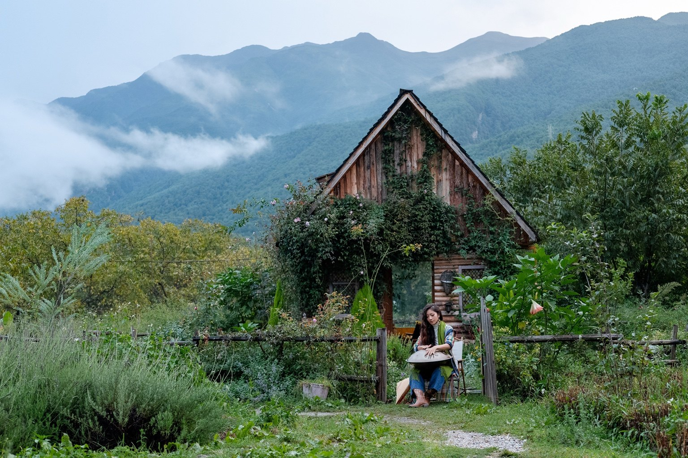
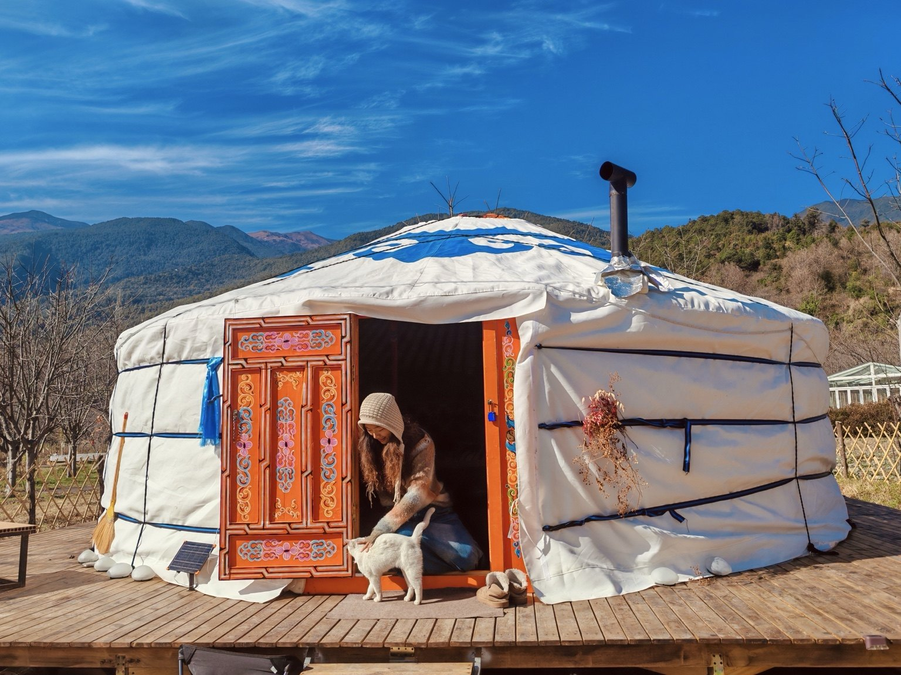
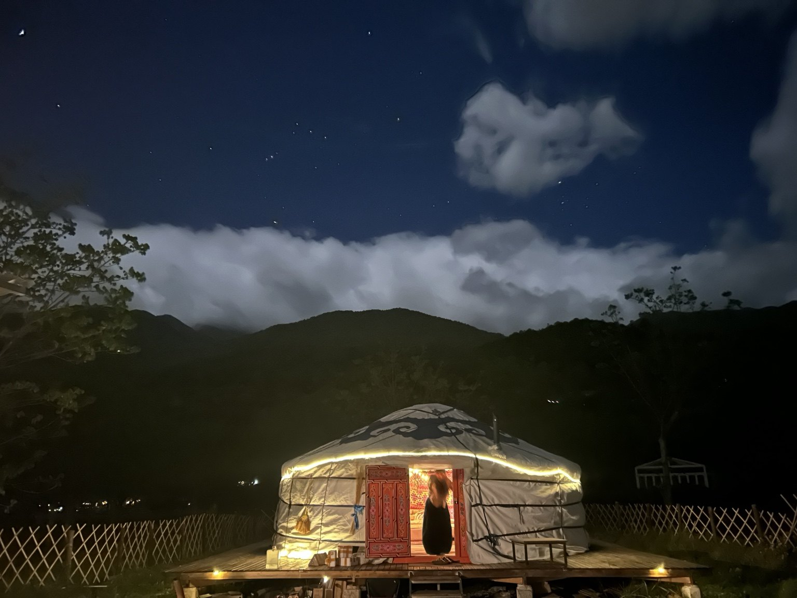
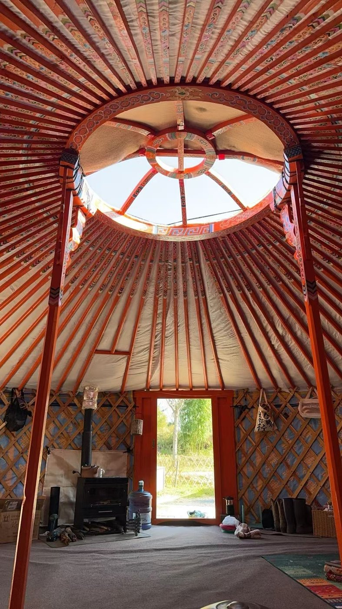
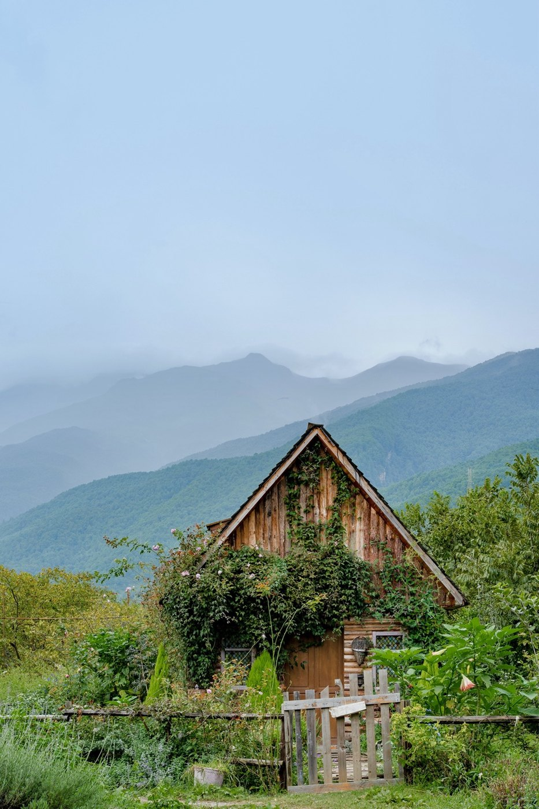
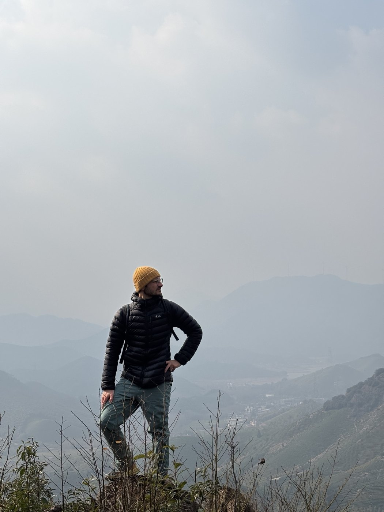
Tell us what kind of visit you have in mind. We can help with accommodation, event space and garden experiences.
This is an inquiry form, not an instant reservation: it prepares a message you can copy and send through your preferred channel. No personal details are uploaded to a server.